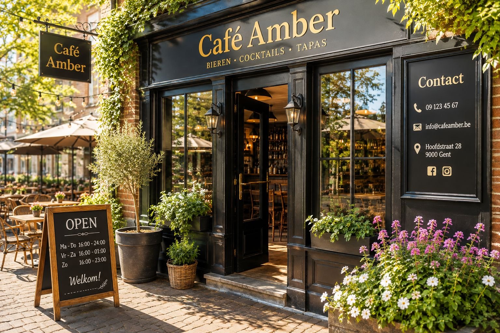
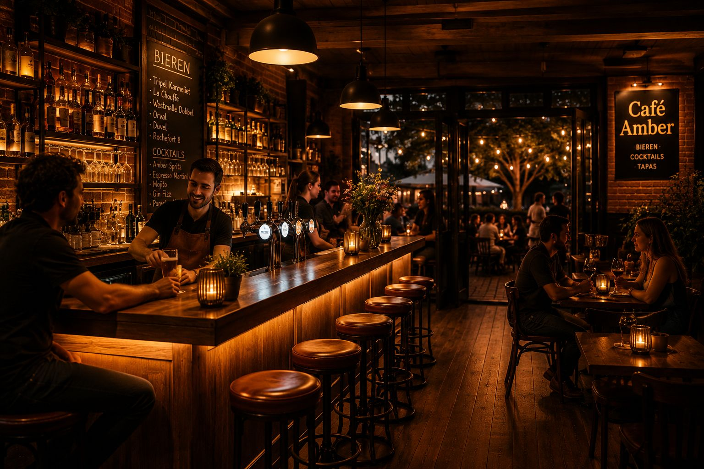
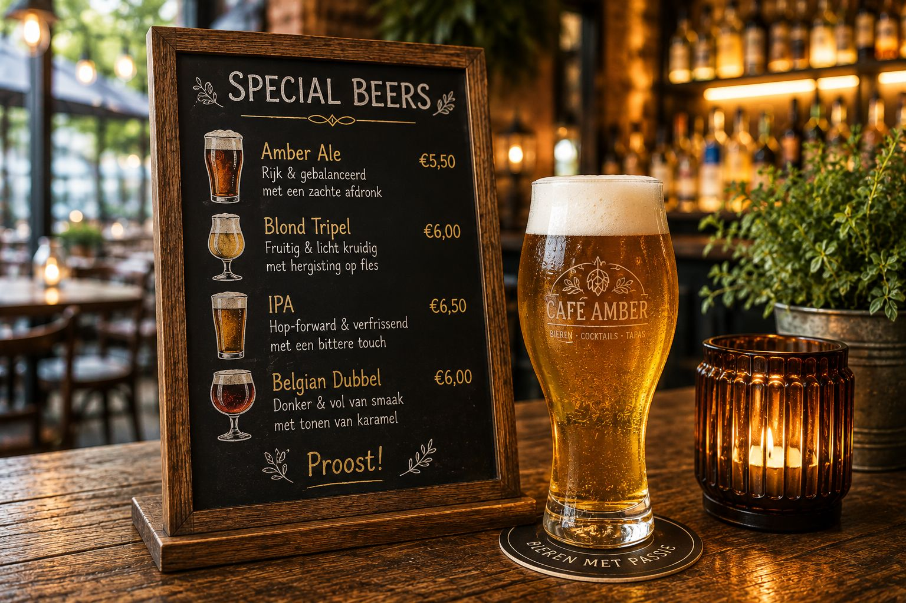
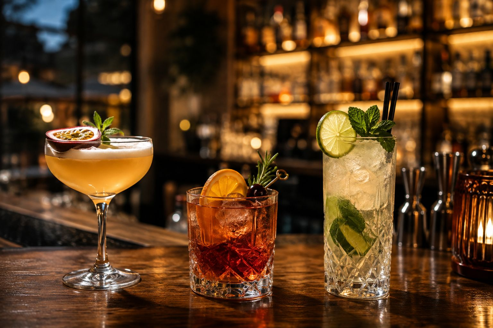
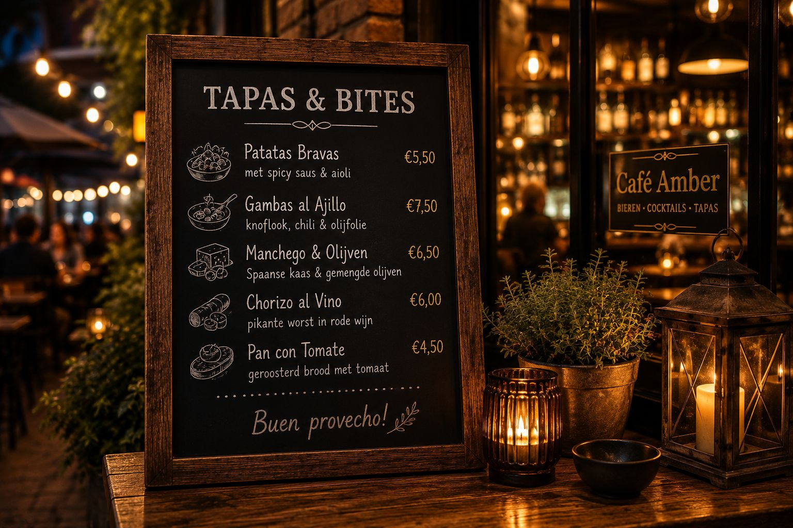
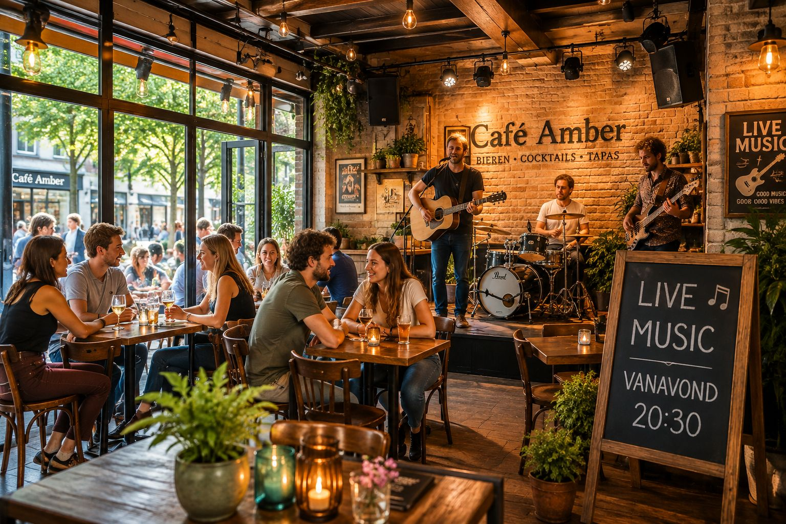
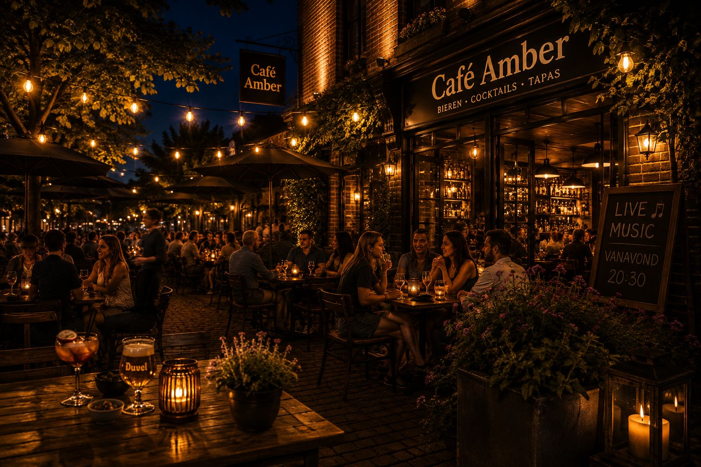

Vrijdag
Acoustic Sessions
Van 20:30 tot laat · demo-event

Cafe Amber
Bieren · Cocktails · Tapas · Live Music
Een warme stadsbar voor speciaalbier, cocktails, tapas en live muziek.
Van dag naar avond
Overdag voelt Amber open, licht en sociaal. Tegen de avond schuift de energie naar aperitief, live sessies en gesprekken die nog een ronde blijven duren.


Dranken als hoofdrol
Elke selectie verandert de toon van de bar. Namen en prijzen hieronder zijn demonstratief.

Amber selectie
Smaakprofiel: moutig, kruidig, fris bitter of zacht karamel, afhankelijk van je glas.
Aanbeveling: combineer met patatas bravas of chorizo al vino voor een gedeelde tafelstart.

Avondmix
Smaakprofiel: fris, citrus, kruidig en iets dieper tegen het einde van de avond.
Aanbeveling: ideaal naast gambas al ajillo of pan con tomate wanneer de bar voller wordt.

Om te delen
Demokaart voor gedeelde bites, uitgewerkt voor bier- en cocktailcombinaties.
Patatas bravasSpicy saus, aioli en een frisse blond erbij.
Gambas al ajilloKnoflook, chili en een citruscocktail als contrast.
Manchego & olijvenZacht zout, ideaal naast een amber ale.
Chorizo al vinoVol, kruidig en perfect met een dubbel.
Pan con tomateLuchtig, sappig en sterk als eerste deelronde.
Live at Amber
De live-avonden in deze demo zijn illustratief, maar de ervaring is bewust opgebouwd rond tafels, drank en muziek in dezelfde ruimte.

Vrijdag
Van 20:30 tot laat · demo-event
Zaterdag
Bandavond met volle barenergie · demo-event
Zondag
Rustiger einde van het weekend · demo-event
Terraservaring
Een terrasmoment met avondritme, warme verlichting en genoeg ruimte voor kleine groepen. Capaciteit en labels hieronder zijn demonstratief.
SeizoenslabelZomeravond · demo
Terrascapaciteit42 plaatsen · demo
Beste moment17:00 tot laat

Verhaal van Amber
Amber draait om een tafelcultuur die niet geforceerd voelt: speciaalbier met karakter, cocktails met een moderne twist, tapas om te delen en lokale live muziek die de ruimte niet overneemt maar draagt.
De sfeer blijft toegankelijk, zonder haar scherpte of stijl te verliezen. Dit is geen nostalgische bruine kroeg en ook geen afstandelijke cocktailbar, maar een hedendaagse stadsplek waar je vanzelf nog even blijft zitten.
Bezoek ons
Fictieve demogegevens, overgenomen als zichtbare broninformatie uit het aangeleverde beeld.
Reserveer een tafel
Dit formulier is demonstratief en verzendt geen echte reservatie. Het toont de ideale inputstructuur voor datum, tijd, gezelschap en voorkeur binnen of terras.